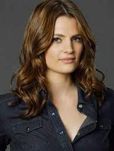
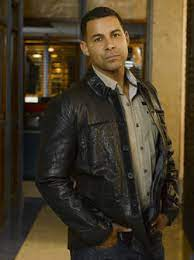
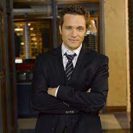
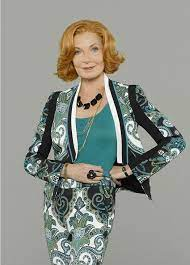

Esta página web está dedicada a dar a conocer la serie de televisión Castle, emitida entre los años 2009 y 2016. Mezcla el romance con intrépidas aventuras que viven los protagonistas mientras resuelven grandes crímenes.
Esta página web está dedicada a dar a conocer la serie de televisión Castle, emitida entre los años 2009 y 2016. Mezcla el romance con intrépidas aventuras que viven los protagonistas mientras resuelven grandes crímenes.
Richard Castle es un exitoso escritor de novela negra que hace equipo con la inspectora de policía de homicidios Kate Beckett, para intentar resolver crímenes en Nueva York después de que un asesino en serie imite los métodos de sus novelas.
| Nombre | Descripción | Foto |
|---|---|---|
| Richard Castle | Famoso escritor de superventas que, después de matar a su personaje principal, se queda sin inspiración. Cuando un asesino empieza a imitar los crímenes de sus novelas, el escritor colabora con la división de policía capitaneada por Beckett, a la que persigue durante todos sus casos. Su madre vive con él y con su hija adolescente Alexis. A pesar de tener un comportamiento infatil e incluso un poco irresponsable, resulta una pieza clave a la hora de resolver los misterios que envuelven los asesinatos, gracias a sus novelas de ficción y misterio. Castle se hace detective privado, cosa que a Beckett no le hace gracia, porque colabora en sus mismos misterios. Este, cuando Beckett se marcha de casa para dejarlos a salvo, se dedica a buscarla por todos los rincones poniendo en risgo su ida | |
| Katherine Beckett | Katherine Houghton Beckett es inspectora de la policía de la Comisaría 12 en Nueva York. Tras ser elegida por Richard Castle como su musa, se ve obligada a aceptar que la "siga" y que observe su trabajo para la documentación de su próximo libo "Ola de calor" como el personaje principal Nikki Heat. Es fan del escritor, algo que intenta esconder delante del resto para evitar ser objeto de burla. En cuanto a su personalidad es deportista, tenaz y adicta al trabajo. Siempre busca la verdad y hacer justicia. Se hizo policía para descubrir al asesino de su madre, Johanna Beckett. A lo largo de la serie se puede ver como evoluciona su relación con Castle, de quien acaba enamorándose y casándose. Acabará convirtiéndose en la nueva capitana de la comisaría. |  |
| Javier Espósito | Policía subordinado de Beckett y amigo de Ryan. Disfruta viendo como Castle consigue sacar a Beckett de sus casillas. Procede de la Comisaría 54 junto al capitán Roy Mongomery. Antes de estar en la policía neoyorquina trabajó en el ejército. Empieza a interesarse por una nueva forense llamada Lanie. Se conocen y al poco tiempo empiezan a salir juntos. |  |
| Kevin Ryan | Policía subordinado de Beckett, amigo de Espósito y Castle. Se casa con Jenny Ryan, con la que al poco tiempo tiene su primer hijo. Había trabajado como infiltrado en la mafia irlandesa en varias ocasiones y en narcóticos antes de ingresar en la Comisaría 12. |  |
| Alexis Castle | Hija adolescente de Castle y de Meredith, resulta ser bastante madura y responsable para su edad. Ha trabajado e la morgue ayudando a Lanie como becaria. Sus problemas personales suelen verse reflejados en los casos que investigan su padre y Beckett. Cuando su padre se hace investigador privado, trabaja con él para encontrar a Beckett. | |
| Martha Rodgers | Madre de Castle y abuela de Alexis. Es una antigua actriz de Broadway y ayuda a su hijo a criar a su nieta mientras vive una vida social muy ajetreada. Un antiguo novio, Chet, le deja una herencia de un millón de dólares, que utiliza para abrir una academia de interpretación para actores y actrices. |  |
| Lanie Parish | Médica forense que colabora con la policía. Es amiga cercana de Beckett. Mantenía una relación con Espósito, pero después de cortar quedaron varias veces y se rumorea que podrían volver a estar juntos. | |
| Roy Mongomery | Antiguo jefe de policía del distrito 12 del Departamento de Policía de Nueva York. Tiene una gran afinidad por Beckett. Muere asesinado al final de la temporada 3. | |
| Victoria Gates | Nueva jefa del distrito 12 a partir de la cuarta temporada. Es muy estricta y desea que la llamen "señor" en vez de "señora". |